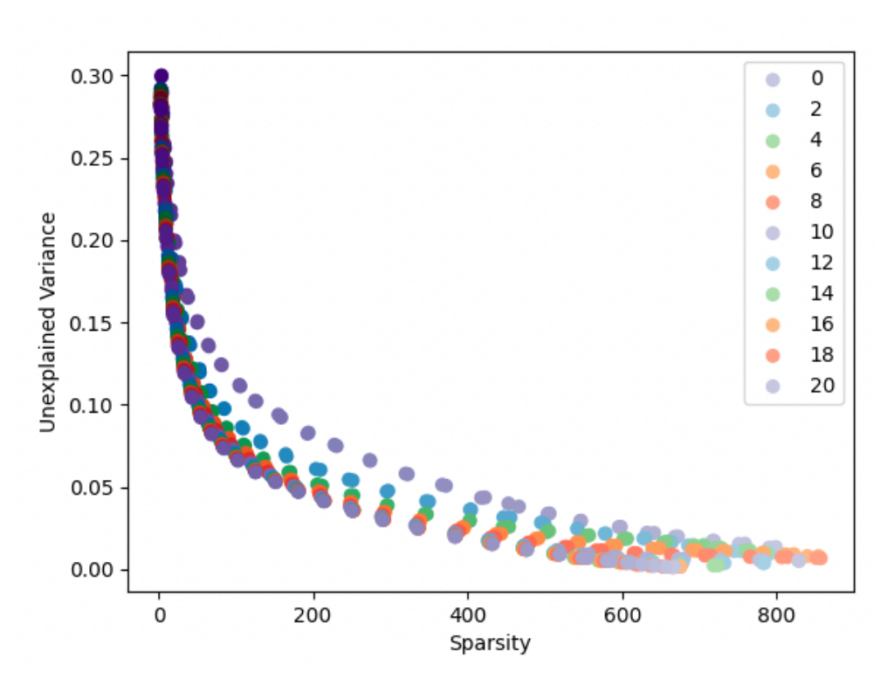

Sparsity/variance tradeoff across training epochs

Reading the scatter plot
The axes match the previous figure -- mean active-feature count (here labeled 'Sparsity') against unexplained variance -- but color now encodes the number of training epochs completed, from the legend's lowest value up to 20, rather than dictionary size. Each colored curve is itself a full sweep over the sparsity coefficient $\alpha$, with every point a separately trained autoencoder at that epoch count. It is easy to misread a single color as one model getting trained progressively longer along that curve. It is not: a point's horizontal position comes entirely from its $\alpha$ value, not from training time, so the effect of training duration only shows up when comparing across colors, not by following one color left to right.
What the sweep shows
The series with the fewest training epochs sits visibly above and to the right of every other epoch count across most of the range: for the same number of active features, its unexplained variance is markedly worse. The remaining epoch counts collapse onto nearly the same curve, largely overlapping one another. This indicates the sparsity/reconstruction tradeoff for a given $\alpha$ converges after relatively little training, with additional epochs beyond that point producing little further change in the achievable tradeoff (sparse-autoencoders, §"B SPARSE AUTOENCODER TRAINING AND HYPERPARAMETER SELECTION", p. 12).
Context
Together with the dictionary-size sweep, this figure supports the paper's Sparsity-reconstruction tradeoff (no single correct decomposition) claim: the smooth, knee-free curve traced here by the $\alpha$ sweep, and its stability once training has converged, is offered as evidence against a single objectively correct sparse decomposition, arising from the competing Sparsity loss (L1 penalty on feature activations) and Reconstruction loss terms in the training objective.